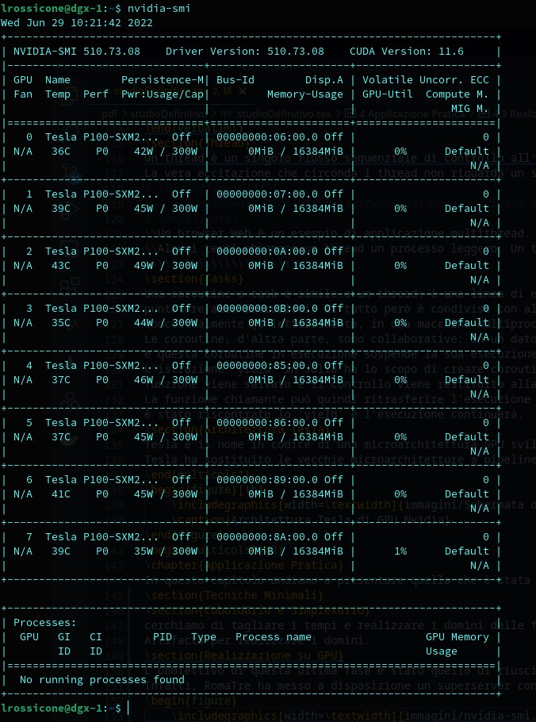

Applicazione Pratica
In questo capitolo andiamo a presentare quella che è stata la nostra esperienza: i nostri esperimenti, tentativi falliti e riusciti, quesiti aperti e altro.
Tecniche Minimali
Inizialmente le tecniche che abbiamo adoperato sono state tratte dal libro \"Julia High Performance: Optimizations, distributed computing, multithreading, and GPU programming with Julia 1.0 and beyond\" [@julia]. Purtroppo questo tentativo è stato fallimentare: non abbiamo registrato miglioramenti significativi, o non ne abbiamo registrati affatto.
CuboidGrid e SimplexGrid
In questa seconda fase abbiamo cercato di ridurre i tempi di esecuzione tranne la realizzazione di domini di funzioni esterni al codice. La nostra idea era quella di utilizzare dei file di configurazione per poter ridurre i tempi di calcolo a discapito dei tempi di caricamento. Questo è stato possibile tramite il package Julia Artifacts.jl, ma si è rivelata una soluzione solo parzialmente efficace.
Realizzazione su GPU
L'obbiettivo di questa ultima fase è stato quello di riuscire a trasportare il calcolo di queste funzioni dalla CPU alla GPU Nvidia fornita dal nostro ateneo. Infatti, RomaTre ha messo a disposizione un superserver con circa 8 schede grafiche per agevolare i nostri test. Di seguito abbiamo inserito una foto dell'esecuzione del comando nvidia-smi:

2 Questa trasformazione in buona sostanza consiste nel passaggio dalla struttura dati QArray al posto della struttura Array. I benchmark eseguiti e i test effettuati sulla versione finale del progetto riportano risultati incoraggianti, i quali sono riportati sia sul notebook che di seguito, dimostrano che i tempi di esecuzione, per la memoria occupata, sono molto buoni ed incoraggianti: